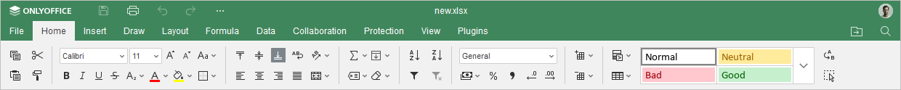
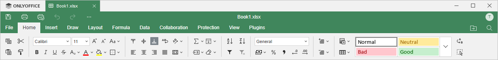

Kartica Home
Kartica Home se podrazumevano otvara kada otvorite Spreadsheet Editor. Omogućava formatiranje ćelija i podataka u njima, primenu filtera, ubacivanje funkcija itd. Ovde su dostupne i neke dodatne opcije, kao što je funkcija Format as table template i druge.
Odgovarajući prozor Online Spreadsheet Editor-a:

Odgovarajući prozor Desktop Spreadsheet Editor-a:

Pomoću ove kartice možete:
- podesiti tip fonta, veličinu, stil i boje,
- poravnati podatke u ćelijama,
- dodati ivice ćelija i spajati ćelije,
- ubacivati funkcije i kreirati imenovane opsege,
- koristiti alat Series za popunjavanje opsega podataka,
- sortirati i filtrirati podatke,
- menjati format brojeva,
- dodavati ili uklanjati ćelije, redove i kolone,
- kopirati/brisati formatiranje ćelija,
- koristiti uslovno formatiranje,
- primeniti šablon tabele na izabrani opseg ćelija.